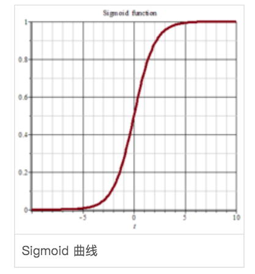
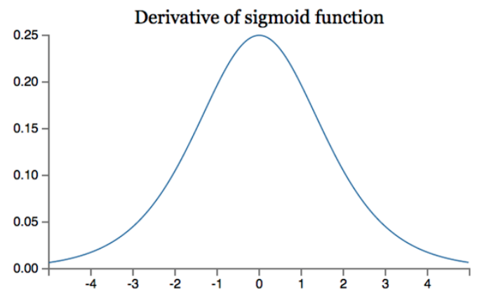
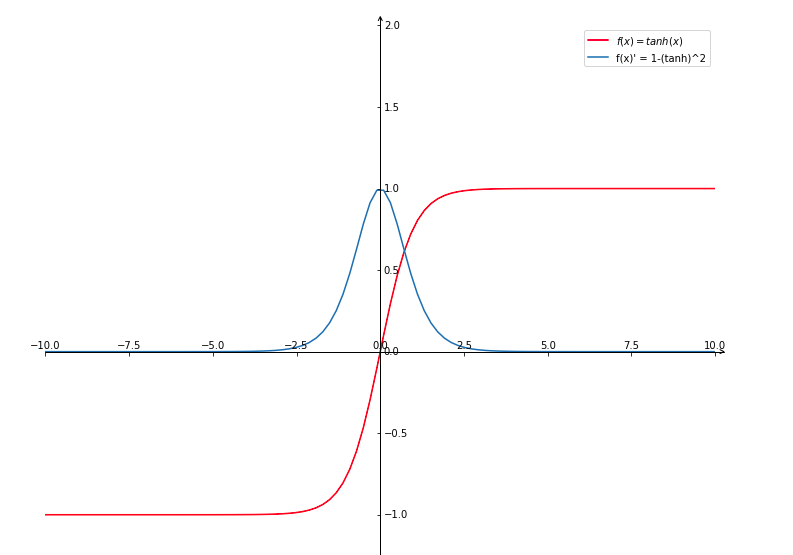
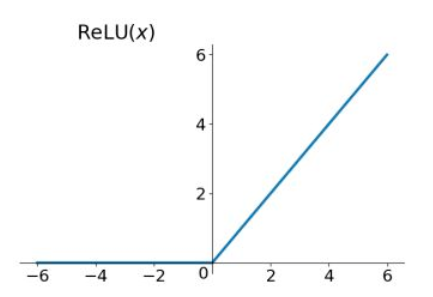
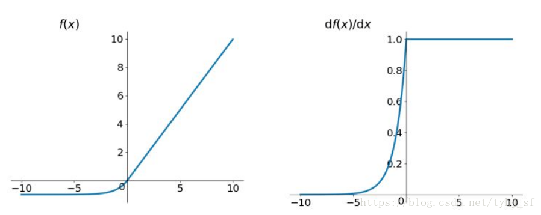

在多层神经网络中，上层节点的输出和下层节点的输入之间有一个函数关系，这个函数就是激活函数。
1. 用途
如果多层神经网络中没有激活函数，那么不管网络有多少层，输出永远是输入的线性组合，相当于原始的感知机，等于没有隐藏层。通过引入非线性的激活函数，增加网络的表达能力。
2. 常用激活函数及性质
2. 1 sigmoid
$f(x)$ 对 x 的导数：
取对数后函数 $log f(x)$ 和 $log(1-f(x))$ 的导函数分别是：
因此sigmoid 常作为二分类问题的输出层激活函数，单个样本的损失函数为对数似然函数：
| sigmoid 图像 | sigmoid导数图像 |
|---|---|
|  |  |
- 输出有界，能够把连续的输入映射为0到1之间的输出，如果输入是很大的负数，输出为0；如果是很大的正数，输出为1. 可以用来做二分类，也叫Logistic 函数
- 当神经网络深度加深时，反向传播时发生梯度消失的概率很大。观察上面 Sigmoid的导数图像，假设神经网络权重初始化为[0, 1]之间，梯度从后往前传播时，每传递一层，梯度值都会减小为原来的 0.25 倍，如果网络非常深，那么梯度回传到前面的隐藏层时会接近于0，称为梯度消失。当网络权重初始化为1到正无穷大时，会出现梯度爆炸现象。
- Sigmoid 的输出不是0均值的，产生的后果是，如果$x > 0$，$f=w^Tx+b$，对$w$求局部梯度都会为正，这样反向传播时$w$要么都往正方向更新，要么都往负方向更新，使得收敛缓慢。
- 求解公式中含有幂运算，网络规模很大时计算量很大。
2. 2 tanh (hyperbolic tangent)
$tanh(x)$ 对x的导数：
记 $a= e^x, b=e^{-x}$，因为$(\frac{\mu}{v})’ = \frac{\mu ‘ v - \mu v’}{v^2}$，$\mu=(a-b)$，$v=(a+b)$
所以：
$tanh(x)$ 和$tanh(x)’$的图像如下：

$tanh(z)$ 是 Sigmoid 的变体，取值范围是[-1, 1], Sigmoid 取值范围 [0, 1]
解决了 Sigmoid 函数不是 0 均值的问题，但是仍存在梯度消失和幂运算问题
2.3 ReLU

- 在正区间解决了梯度消失问题，计算速度非常快，只需要判断输入是否大于0，收敛速度远快于sigmoid和tanh；
- 输出不是0均值；并不是全区间可导;
- 存在Dead ReLU问题，即某些神经元可能永远不会被激活，使得相应的参数永远不会被更新。 尤其是learning rate 很大时，因为一次梯度更新的幅度非常大，导致某些ReLU节点的权重调整得太大，这个神经元就再也不会对后续数据有激活现象了，它的梯度就永远都会是0。
2.4 Leaky ReLU
为了解决Dead ReLU问题，提出将ReLU的前半段设为 $\alpha x$。
2.5 PReLU
a 是在channel或global上可训练的参数；常用是初始化为0.25，channel 之间设为不共享。
2.5 ELU (Exponential Linear Units)

不会有Dead ReLU问题，输出接近0均值，但计算量比ReLU大。
Softmax
用于多分类输出，与sigmoid 的区别是：
- sigmoid 是将一个实数映射到（0，1）区间，用来做二分类；而softmax 是把k维的向量映射成一个和为1的向量，可以做多分类任务。
- Softmax 是 sigmoid 的扩展，当类别数为2时，softmax 只预测其中一个类别的概率，与logistic 回归一致。
- 可以通过多个sigmoid回归叠加实现多分类，此时输出的类别并不是互斥的；但softmax做多分类时，类于类之间是互斥的，一个输入只能被归为一类。